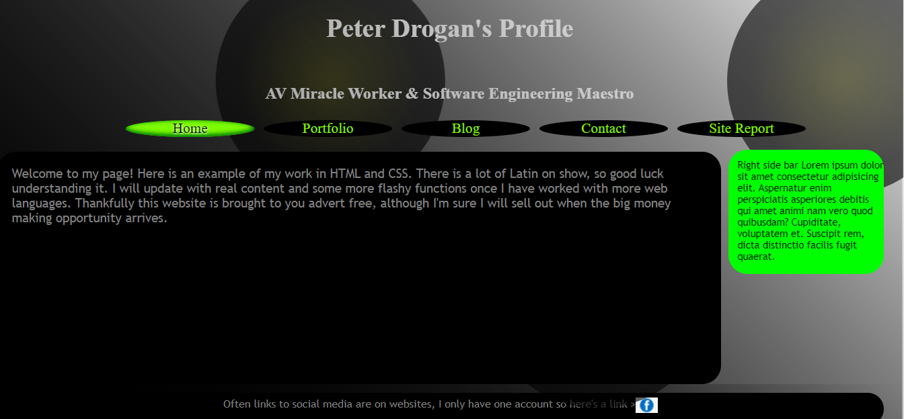
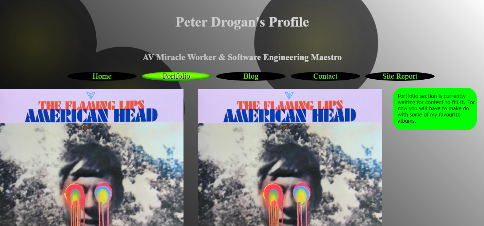
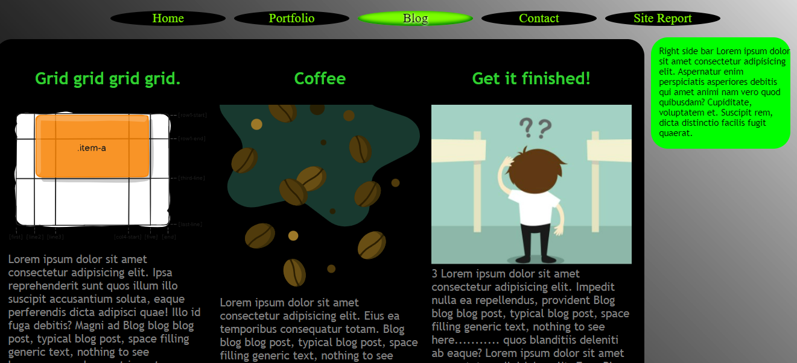
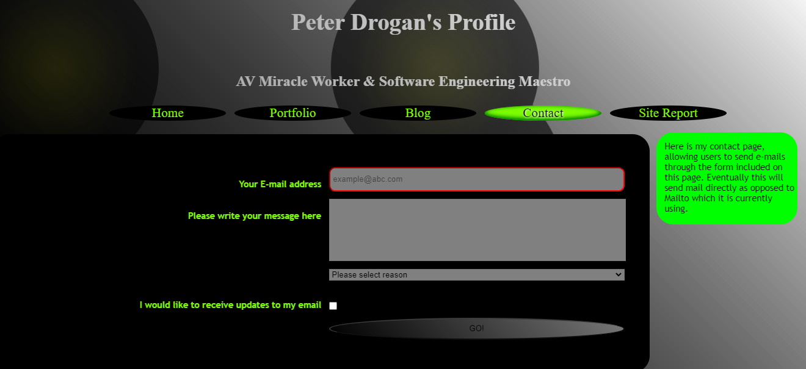
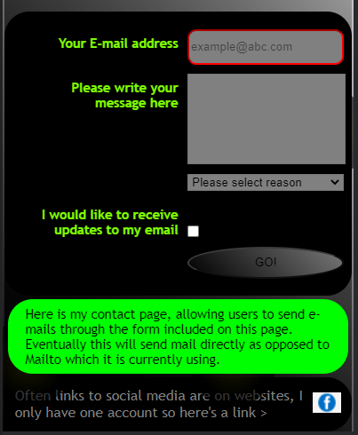
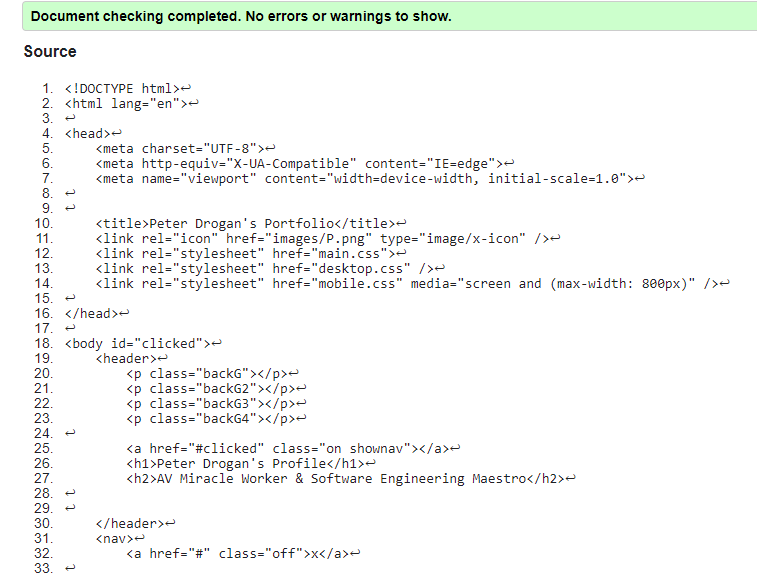
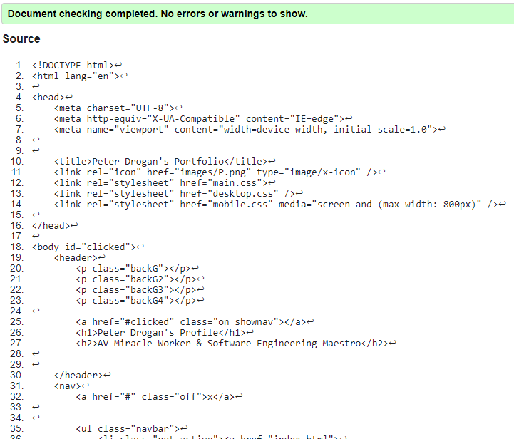
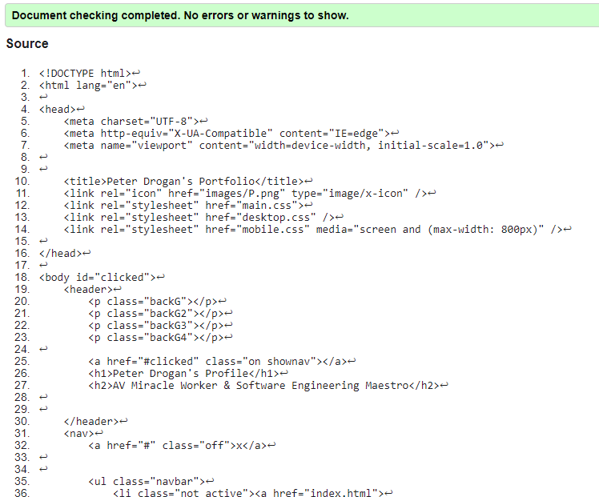
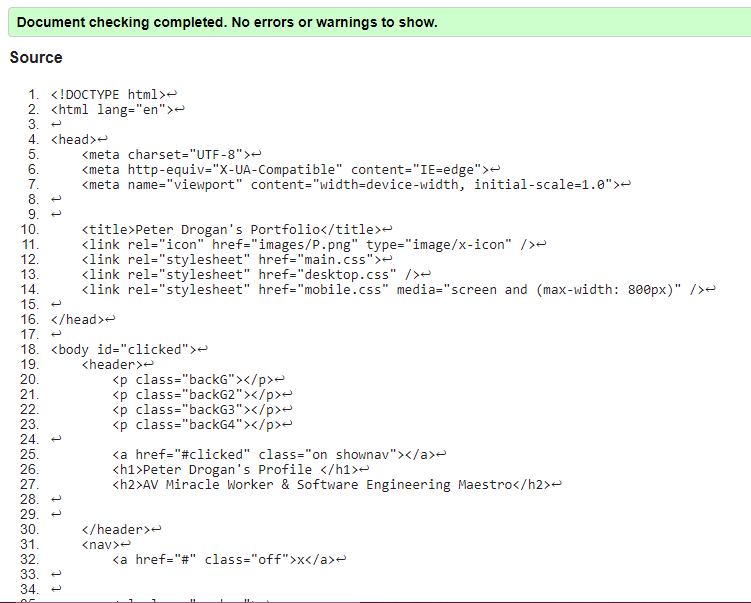
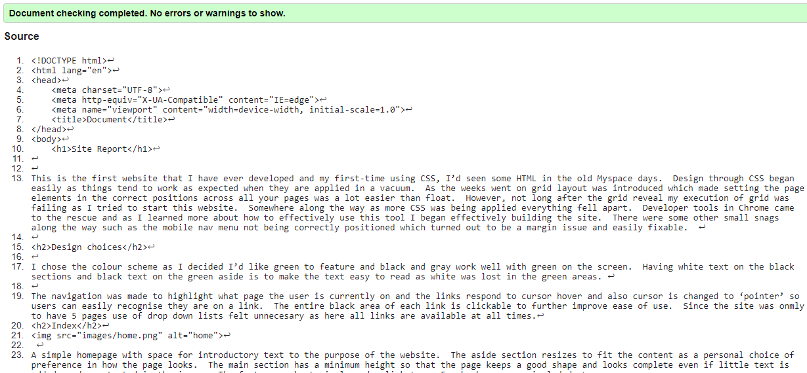

Site Report
This is the first website that I have ever developed and my first-time using CSS, I’d seen some HTML in the old Myspace days. Design through CSS began easily as things tend to work as expected when they are applied in a vacuum. As the weeks went on grid layout was introduced which made setting the page elements in the correct positions across all your pages was a lot easier than float. However, not long after the grid reveal my execution of grid was failing as I tried to start this website. Somewhere along the way as more CSS was being applied everything fell apart. Developer tools in Chrome came to the rescue and as I learned more about how to effectively use this tool I began effectively building the site. There were some other small snags along the way such as the mobile nav menu not being correctly positioned which turned out to be a margin issue and easily fixable.
Design choices
I chose the colour scheme as I decided I’d like green to feature and black and gray work well with green on the screen. Having white text on the black sections and black text on the green aside is to make the text easy to read as white was lost in the green areas.
The navigation was made to highlight what page the user is currently on and the links respond to cursor hover and also cursor is changed to ‘pointer’ so users can easily recognise they are on a link. The entire black area of each link is clickable to further improve ease of use. Since the site was onmly to have 5 pages use of drop down lists felt unnecesary as here all links are available at all times.
Index

A simple homepage with space for introductory text to the purpose of the website. The aside section resizes to fit the content as a personal choice of preference in how the page looks. The main section has a minimum height so that the page keeps a good shape and looks complete even if little text is added as demonstrated in the image. The footer was kept simple and a link to my Facebook page was included.
Portfolio

The portfolio page has placeholder images where screenshots of work I have completed will eventually sit. The images would be made into links to the completed work where possible to do so. Design overall is consistent with the rest of the pages.
Blog

H2 tags were used for blog titles and green colour for the text so that as more are added each new blog stands out from the last. Images placed at top of columns to quickly show the themes of each blog on the page.
Contact

The contact page includes a compact form with standout labels. E-mail address input area is bordered red as it is a mandatory field, there is also example email address preview text. The submit/go button changes to green and the font weight increases as the cursor is hovering on it. Hover effects on these types of buttons make it obvious to users that it is a functioning button.
Background
The background consists of a black linear gradient which completes the dark and green theme across the site. I chose to have 4 circles moving around the page using keyframe animations. I had originally planned for these to be visible as they moved behind the main and aside but it made reading the text to difficult as they were too distracting.
Mobile

Mobile optimisation has kept the theme from the desktop site and made it mobile friendly. The grid has been made into 1 column to make it wide enough to fit easy to read text in with maximum number of words per line. The navigation has been altered into a burger icon which makes the navigation visible, which is again made to sit in one column so as to all be easy to select and view. Some changes to margins and padding were necessary for the mobile version so that they were properly centred with slight gaps between each part of the page.
Improvements
For future projects using CSS I would organise my code more neatly to begin with as time was lost trying to tidy it up and remove redundant code. I would draw up a wireframe as starting straight away meant spending extra time deciding what I wanted the page to look like while having to code it all along. Improved understanding of developer tools would help streamline the debugging and design process as identifying what was causing the issues along the way would now be much quicker on any future project, substantial time was lost to before I really got to grips with how to properly use it.
References
Grid layout from class exercises was used as basis for the site. Also, the burger menu used was from work done in class. I didn’t take inspiration from other websites as I wanted to make a site in the way that I saw fit and make it aesthetically pleasing as well as user friendly which I think I have achieved.
Code validation




